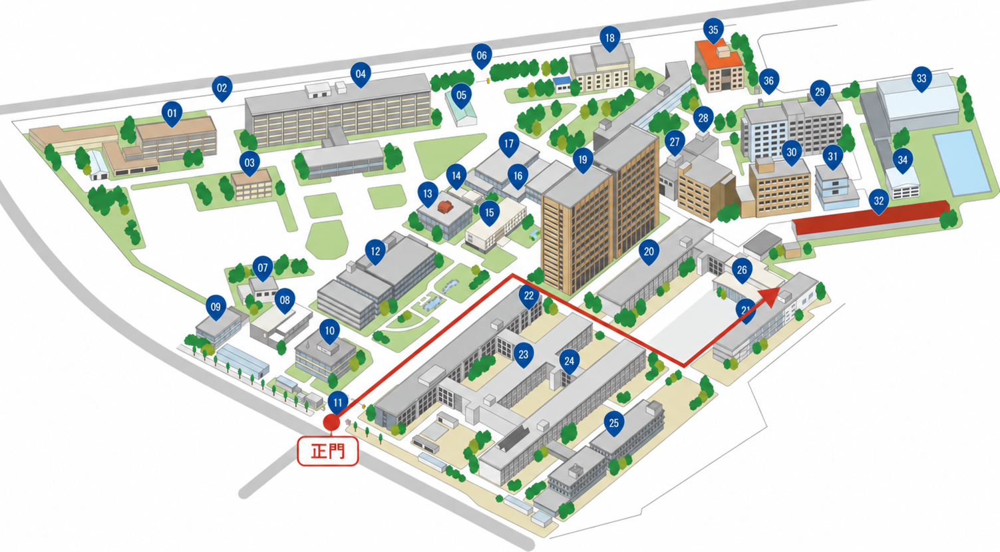

Access
Access
Address
Semiconductor Integrated Device Engineering Laboratory
University of Fukui
3-9-1 Bunkyo, Fukui 910-8507, Japan
Research Building IV-2 (Engineering Laboratory Building)
Bunkyo Campus, University of Fukui
Professor's office3F IV-2322
Laboratory1F IV-2126
Directions from the main gate

- Enter through the main gate and proceed toward the Faculty of Engineering area.
- At the campus guide board, confirm “21 / Research Building IV-2 (Engineering Laboratory Building)” and proceed to the building.
- Enter through the automatic door on the right side of the arrow, then visit the professor's office (3F IV-2322) or laboratory (1F IV-2126), as appropriate.
Transportation
- By Echizen Railway: approximately 2 minutes on foot from Fukudaimae-Nishifukui Station on the Mikuni Awara Line to the main gate.
- By bus: from stop No. 2 at the west exit of JR Fukui Station, take a Keifuku Bus for approximately 10 minutes and get off at “Fukui-Daigaku-Mae.”
- By taxi: approximately 10 minutes from JR Fukui Station. Ask for “University of Fukui, Bunkyo Campus.”
For building locations and routes within campus, please refer to the official University of Fukui access information and campus map.